Transnistria, or the Pridnestrovian Moldavian Republic (PMR) as it prefers to be called, is a place where time has stood still since the fall of the Soviet Union. Visiting the unrecognised country's capital is like entering a time capsule from the past.
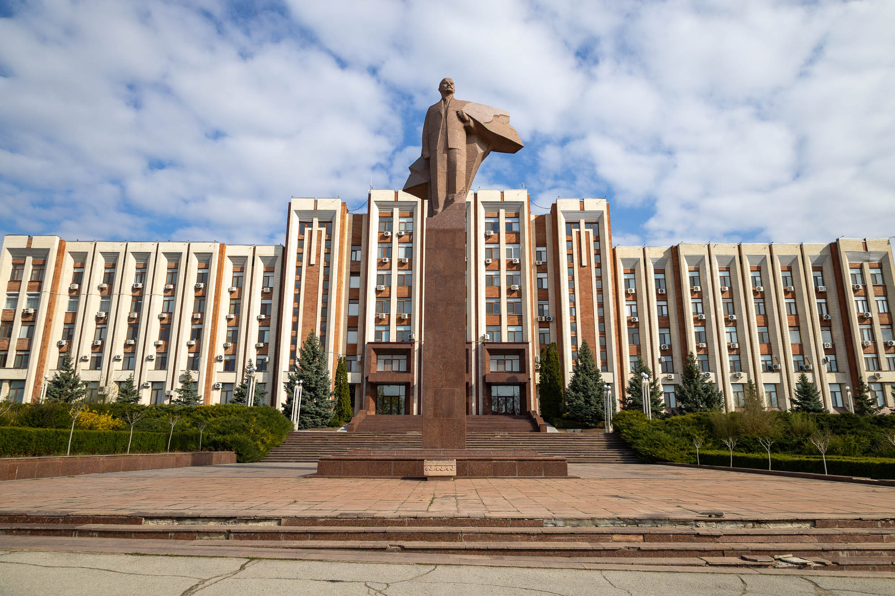
The Supreme Council of the Pridnestrovian Moldavian Republic and Lenin
This thin sliver of land between the Ukraine border and the Dniester river is de facto independent, but unrecognised by countries of the world except for Russia and other post-Soviet conflict countries like Abkhazia and South Ossetia. The rest of the world considers this area Moldova.
The country is run by its own government, parliament, military, police, and rouble-like currency. The clearest example of this is Tiraspol's main government building and its large Lenin statue. But fair warning, if you're seen to be taking photos and not quick about it, police will quickly appear, note down your passport details, and keep you moving onwards.
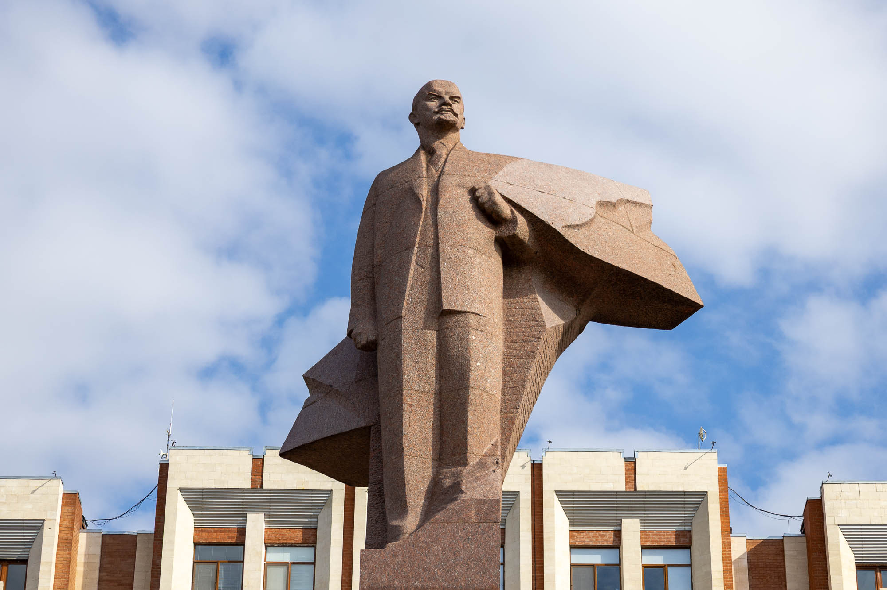
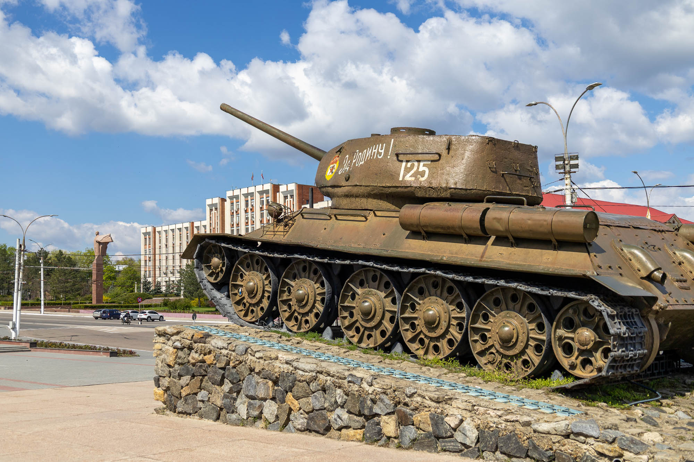
T-34 Tank Monument
The fight for independence in the area was triggered by the rise of pro-Romanian nationalism in Moldova. Reacting to the prospect of removing Russian as the official language, the Russian-speaking region of Transnistria declared independence as the Soviet Union collapsed. This sparked a brief 1992 war that ended in a permanent ceasefire after the Russian army intervened, leaving Transnistria under lasting separatist control.
This tank, a classic Russian model, stands at the Memorial of Glory. Along with the Tomb of the Unknown Soldier, this memorial remembers all who died in World War II all the way up to the 1992 independence war.
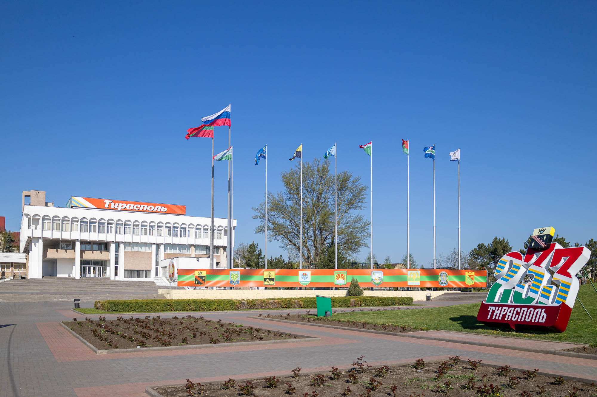
Suvorov Square
Bordered on the north by the lively Green Market and on the south by Catherine the Great Park, this square is named after the founder of Tiraspol, Alexander Suvorov. His Wikipedia page is a fascinating read that covers many of the 1700s Russian military conquests up until he founded Tiraspol, which was around 233 years ago.
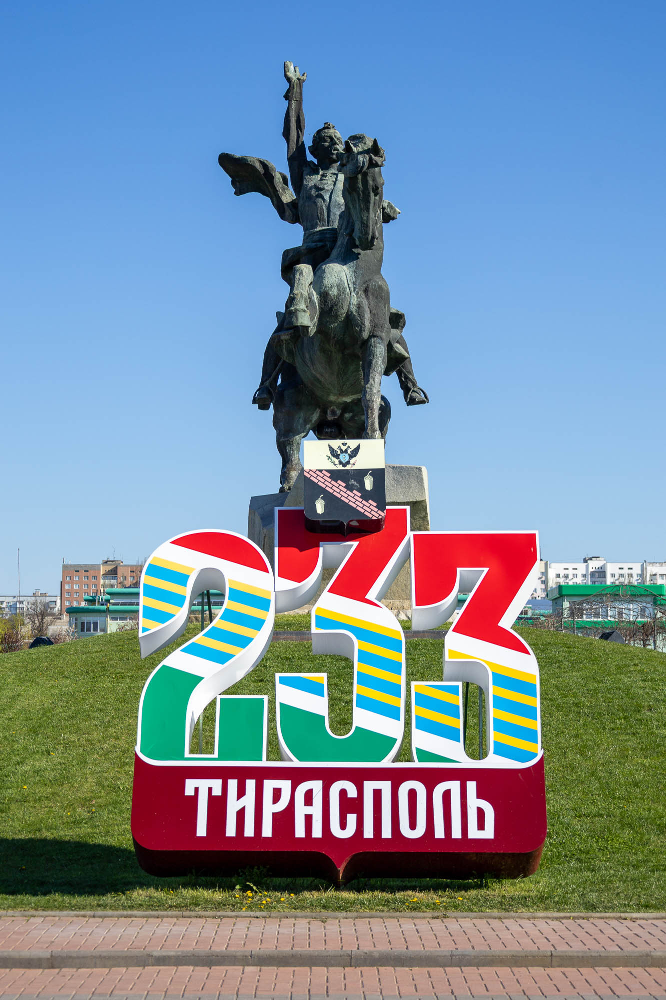
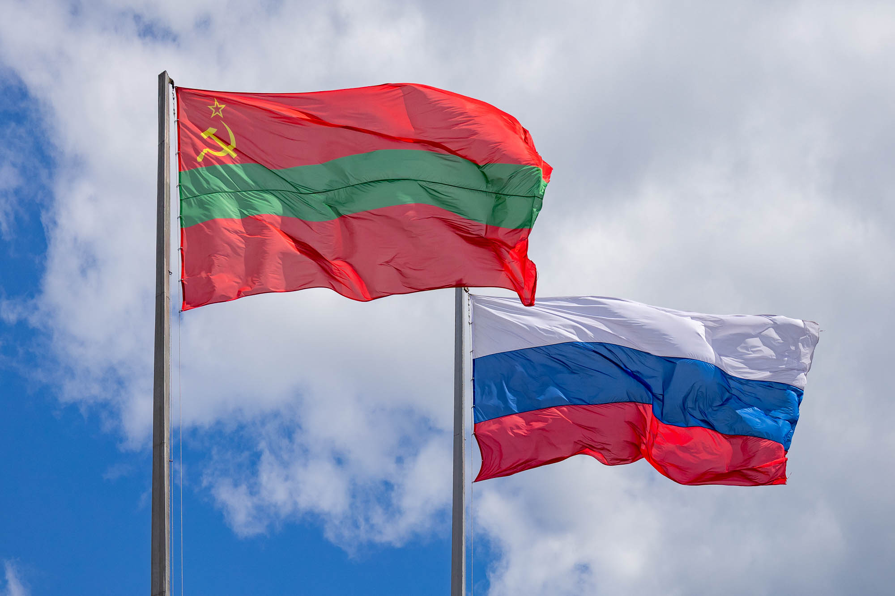
Flags of Transnistria
Transnistria's allegiances are fully on display in the two flags you'll see all over the country. The red and green flag featuring a yellow hammer, sickle, and five-pointed red star is the official flag of the Pridnestrovian Moldavian Republic. It's the same flag the Moldavian Soviet Socialist Republic (Moldovan SSR) used before its independence from the Soviet Union.
The other flag, the Russian flag, shares equal legal status with the state flag and is flown all over the country.
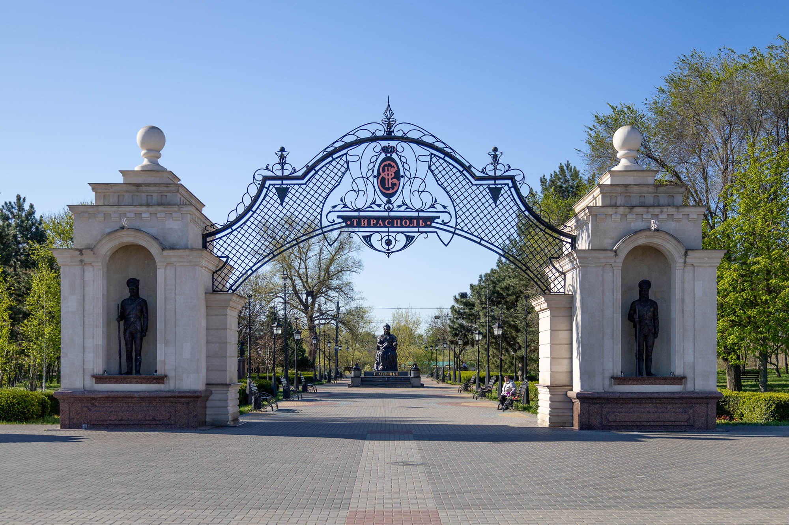
Catherine the Great Park
South of Suvorov Square and north of the winding Dniester River is a park dedicated to the great Russian leader from the 1700s.
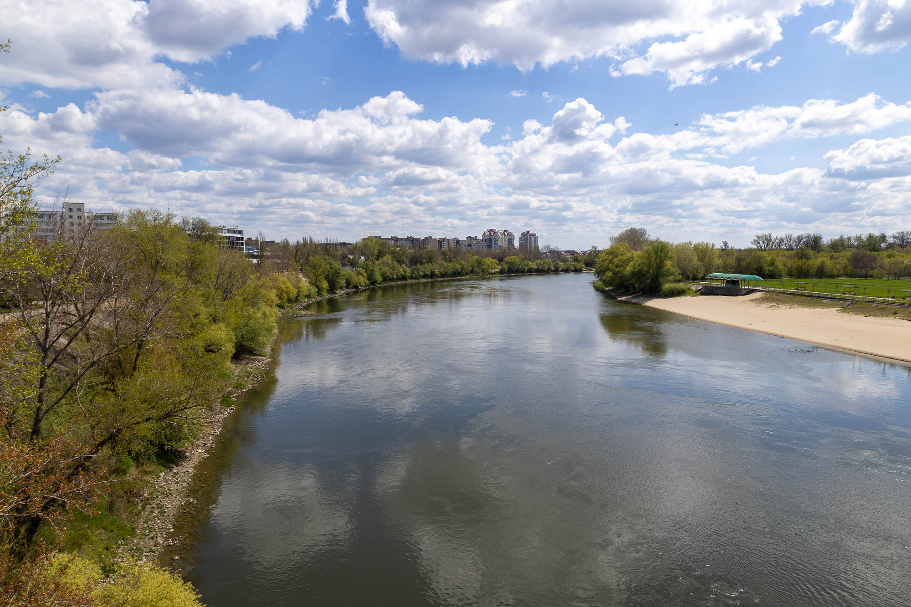
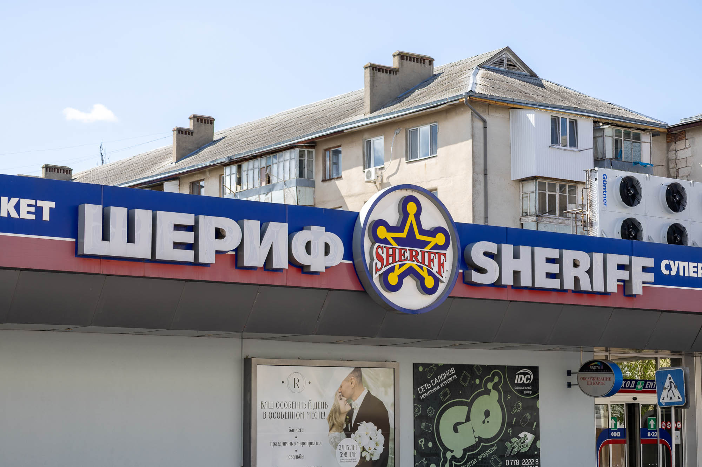
Sheriff Monopoly
Set up by former members of the KGB, the Sheriff company has a monopoly on nearly all forms of profitable business in Transnistria. Supermarkets, petrol stations, a TV channel, a construction company, a car dealership, a distillery, bread factories, a mobile phone network, and the FC Sheriff football club are just some examples of how this company almost runs the country.
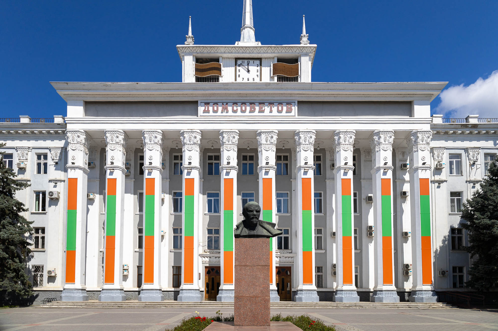
House of the Soviets, aka. Tiraspol City Hall
This large building, built in a Stalinist Empire style, is currently home to the city council and yet another bust of Lenin. Built in the mid-1950s, it is covered in small ornamental features and Soviet emblems.
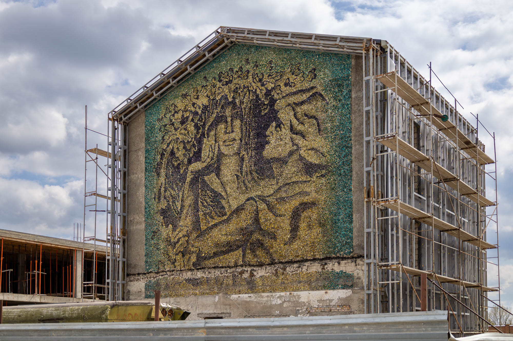
Tree of Life Mosaic
On the north side of town, a little hidden in a construction site, is a beautiful mosaic depicting a common motif in the Moldova area. It's made from fragments of multicoloured glass produced locally in Tiraspol. Hopefully this will be restored or relocated, instead of destroyed, as the construction continues.
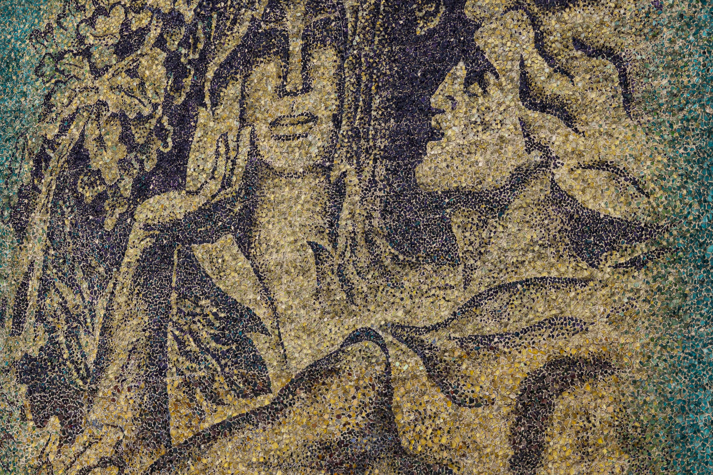
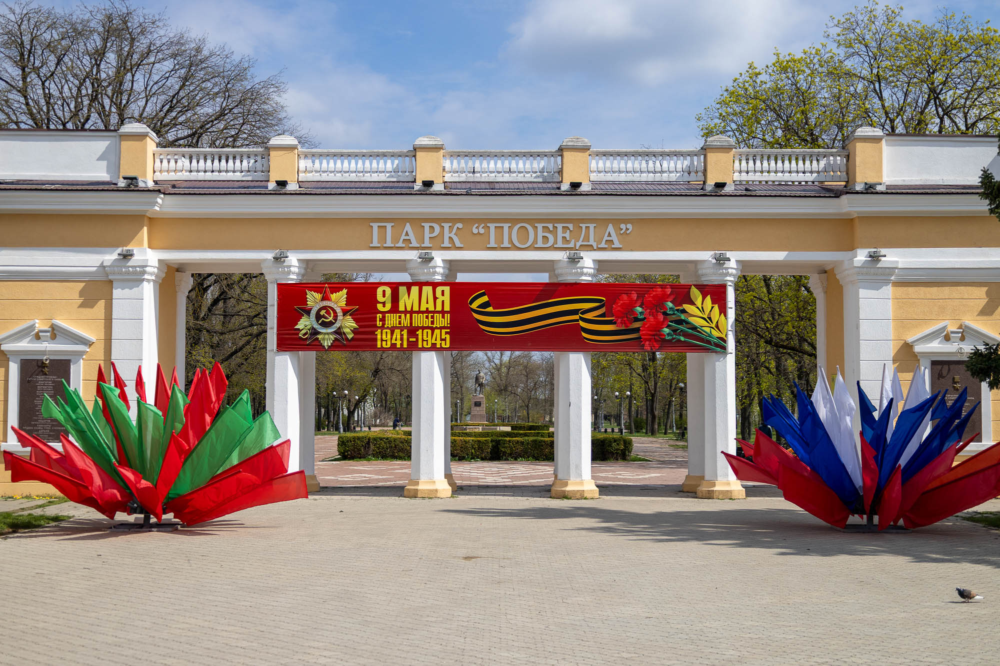
Victory Park
Named after victory in World War II, this park has now been a little forgotten since the recent modernisations of Catherine the Great Park. On the sunny day I visited, it was mostly empty except for the odd dog walker passing through.
In the back quarter of the park, you can find a colourful old Soviet Ferris wheel that doesn't seem to work anymore. It's a very similar model to the abandoned Ferris wheel in Pripyat, Ukraine, one which I hope to one day visit when Transnistria's eastern benefactor state finally ends its latest war.
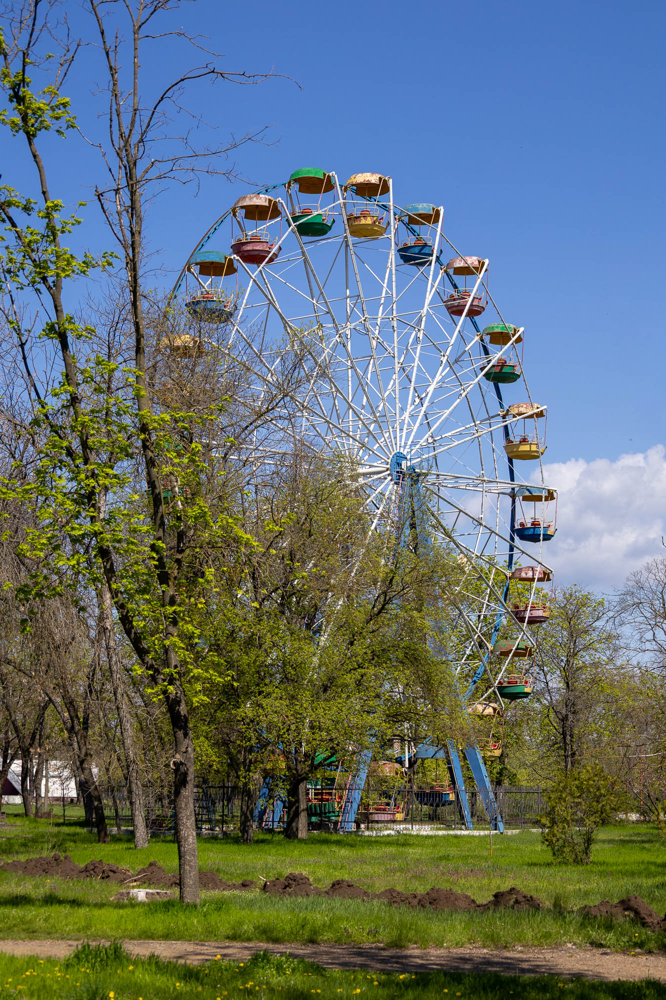
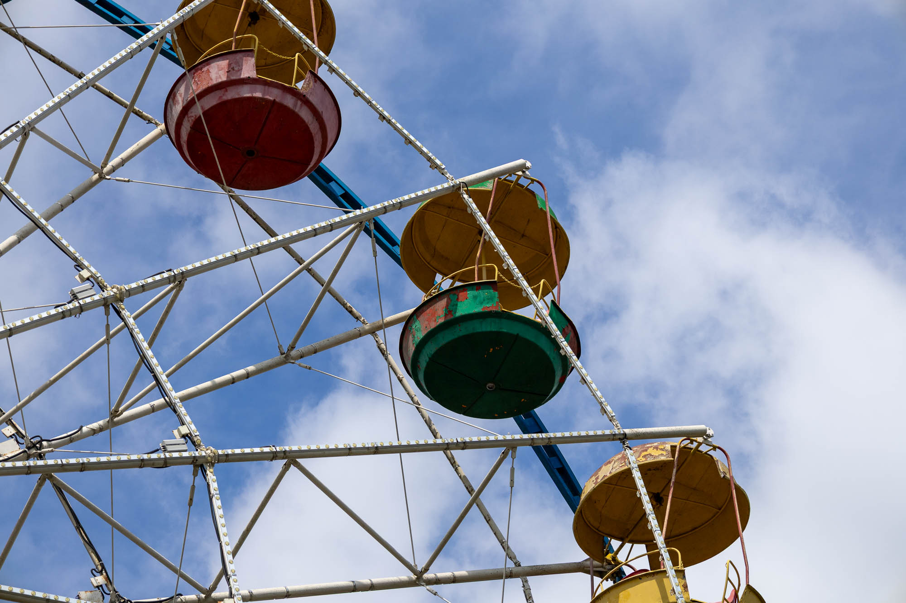